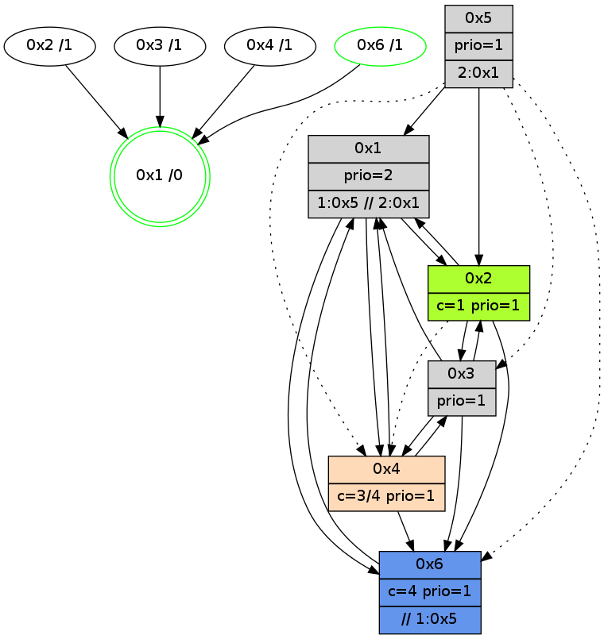

>> << IDX [start] -100 -25 -5 +0 +5 +25 +100 [875.117962122]
 Previous packets
----------------------------------------------------------------------
870.196882 beacon01(adaf) #0 coord=01,02,05,03,04,06 cycle=432.0ms assoc
-- color-indic=1 64 ab d6
870.206843 beacon02(adaf) #0 coord=01,02,05,03,04,06 cycle=432.0ms assoc 64 fa 29
870.216843 beacon05(adaf) #0 coord=01,02,05,03,04,06 cycle=432.0ms assoc 64 5c 03
870.226842 beacon03(adaf) #0 coord=01,02,05,03,04,06 cycle=432.0ms assoc 64 c0 27
870.236843 beacon04(adaf) #0 coord=01,02,05,03,04,06 cycle=432.0ms assoc 64 66 0d
870.246843 beacon06(adaf) #0 coord=01,02,05,03,04,06 cycle=432.0ms assoc 64 12 11
870.258554 [Hello(4): seq=675 sym=2,1,6,3 sysInfo=hasWarning stat=2:15,8,14,2/1:3,1,13,0/6:7,10,2,0/3:12,12,0,3]
870.262254 [Hello(6): seq=588 sym=3,1,2 sysInfo=hasWarning,coloring-mode-on,ColoringModeIndicationCalled stat=3:2,3,2,0/1:4,14,12,1/2:10,10,4,0]
870.265036 [Hello(1): seq=574 sym=2,6 sysInfo=hasWarning,coloring-mode-on,ColoringModeRequestCalled stat=2:4,4,2,0/6:7,4,2,2]
870.268572 [STC(1) #0.94 new-neigh,tree-change,inconsistent-stability,stable,to-color d=0]
----------------------------------------------------------------------
870.688989 beacon01(adaf) #0 coord=01,02,05,03,04,06 cycle=432.0ms assoc
-- color-indic=1 64 6f b9
870.698950 beacon02(adaf) #0 coord=01,02,05,03,04,06 cycle=432.0ms assoc 64 3e 46
870.708951 beacon05(adaf) #0 coord=01,02,05,03,04,06 cycle=432.0ms assoc 64 98 6c
870.718951 beacon03(adaf) #0 coord=01,02,05,03,04,06 cycle=432.0ms assoc 64 04 48
870.728951 beacon04(adaf) #0 coord=01,02,05,03,04,06 cycle=432.0ms assoc 64 a2 62
870.738951 beacon06(adaf) #0 coord=01,02,05,03,04,06 cycle=432.0ms assoc 64 d6 7e
870.750492 [STC(4)->1 #0.94 new-neigh,tree-change,inconsistent-stability,to-color d=1]
870.752587 [STC(6)->1 #0.94 new-neigh,tree-change,inconsistent-stability,stable,to-color d=1]
870.754522 [Hello(3): seq=673 sym=6,4,1,2 sysInfo=hasWarning stat=6:11,7,2,0/4:5,0,2,0/1:3,8,8,1/2:9,10,3,0]
870.756939 [Color(6) seq=101 @0:0 color=4 prio=1 >>1.@5 c=0,1,2,5,6;3]
870.760220 [Color(1) seq=101 @0:0 prio=2 >1.@5 >>2.@1 c=1,4,6;0,2,3,5]
870.761940 [STC(3)->1 #0.94 new-neigh,tree-change,inconsistent-stability,to-color d=1]
----------------------------------------------------------------------
871.181098 beacon01(adaf) #0 coord=01,02,05,03,04,06 cycle=432.0ms assoc
-- color-indic=1 64 23 09
871.191059 beacon02(adaf) #0 coord=01,02,05,03,04,06 cycle=432.0ms assoc 64 72 f6
871.201060 beacon05(adaf) #0 coord=01,02,05,03,04,06 cycle=432.0ms assoc 64 d4 dc
871.211061 beacon03(adaf) #0 coord=01,02,05,03,04,06 cycle=432.0ms assoc 64 48 f8
871.221061 beacon04(adaf) #0 coord=01,02,05,03,04,06 cycle=432.0ms assoc 64 ee d2
871.231061 beacon06(adaf) #0 coord=01,02,05,03,04,06 cycle=432.0ms assoc 64 9a ce
871.242524 [Hello(1): seq=575 sym=2,6 sysInfo=hasWarning,coloring-mode-on,ColoringModeRequestCalled stat=2:4,4,2,0/6:7,4,2,2]
871.246419 [Hello(4): seq=676 sym=2,1,6,3 sysInfo=hasWarning stat=2:15,8,14,2/1:4,2,14,0/6:8,11,3,0/3:13,12,1,3]
871.251838 [Hello(6): seq=589 sym=3,1,2 sysInfo=hasWarning,coloring-mode-on,ColoringModeIndicationCalled stat=3:2,3,3,0/1:5,15,13,1/2:10,10,5,0]
----------------------------------------------------------------------
871.673206 beacon01(adaf) #0 coord=01,02,05,03,04,06 cycle=432.0ms assoc
-- color-indic=1 64 e7 66
871.683167 beacon02(adaf) #0 coord=01,02,05,03,04,06 cycle=432.0ms assoc 64 b6 99
871.693166 beacon05(adaf) #0 coord=01,02,05,03,04,06 cycle=432.0ms assoc 64 10 b3
871.703168 beacon03(adaf) #0 coord=01,02,05,03,04,06 cycle=432.0ms assoc 64 8c 97
871.713167 beacon04(adaf) #0 coord=01,02,05,03,04,06 cycle=432.0ms assoc 64 2a bd
871.723168 beacon06(adaf) #0 coord=01,02,05,03,04,06 cycle=432.0ms assoc 64 5e a1
871.734874 [Hello(3): seq=674 sym=6,4,1,2 sysInfo=hasWarning stat=6:12,7,2,0/4:5,0,2,0/1:4,8,8,1/2:10,10,3,0]
871.739355 [Color(6) seq=102 @0:0 color=4 prio=1 >>1.@5 c=0,1,2,5,6;3]
871.745724 [Color(1) seq=102 @0:0 prio=2 >1.@5 >>2.@1 c=1,4,6;0,2,3,5]
----------------------------------------------------------------------
872.165314 beacon01(adaf) #0 coord=01,02,05,03,04,06 cycle=432.0ms assoc
-- color-indic=1 64 b9 07
872.175275 beacon02(adaf) #0 coord=01,02,05,03,04,06 cycle=432.0ms assoc 64 e8 f8
872.185274 beacon05(adaf) #0 coord=01,02,05,03,04,06 cycle=432.0ms assoc 64 4e d2
872.195275 beacon03(adaf) #0 coord=01,02,05,03,04,06 cycle=432.0ms assoc 64 d2 f6
872.205275 beacon04(adaf) #0 coord=01,02,05,03,04,06 cycle=432.0ms assoc 64 74 dc
872.215276 beacon06(adaf) #0 coord=01,02,05,03,04,06 cycle=432.0ms assoc 64 00 c0
872.226931 [Hello(2): seq=1165 sym=6,1,3 sysInfo=hasWarning stat=6:15,6,3,4/1:8,1,7,0/3:12,3,3,0]
872.229762 [Hello(1): seq=576 sym=2,6 sysInfo=hasWarning,coloring-mode-on,ColoringModeRequestCalled stat=2:5,4,2,0/6:8,4,2,2]
872.232378 [Hello(4): seq=677 sym=1,6,3 sysInfo=hasWarning stat=1:4,3,14,0/6:9,12,3,0/3:14,12,1,3]
872.236118 [Hello(6): seq=590 sym=1 sysInfo=hasWarning,coloring-mode-on,ColoringModeIndicationCalled stat=1:5,0,13,1]
----------------------------------------------------------------------
872.657421 beacon01(adaf) #0 coord=01,02,05,03,04,06 cycle=432.0ms assoc
-- color-indic=1 64 7d 68
872.667381 beacon02(adaf) #0 coord=01,02,05,03,04,06 cycle=432.0ms assoc 64 2c 97
872.677383 beacon05(adaf) #0 coord=01,02,05,03,04,06 cycle=432.0ms assoc 64 8a bd
872.687383 beacon03(adaf) #0 coord=01,02,05,03,04,06 cycle=432.0ms assoc 64 16 99
872.697382 beacon04(adaf) #0 coord=01,02,05,03,04,06 cycle=432.0ms assoc 64 b0 b3
872.707383 beacon06(adaf) #0 coord=01,02,05,03,04,06 cycle=432.0ms assoc 64 c4 af
872.719080 [Hello(3): seq=675 sym=6,4,1,2 sysInfo=hasWarning stat=6:13,8,2,0/4:6,0,2,0/1:5,9,8,1/2:11,10,3,0]
872.721437 [STC(1) #0.95 new-neigh,tree-change,inconsistent-stability,stable,to-color d=0]
872.723073 [Color(1) seq=103 @0:0 prio=2 >1.@5 >>2.@1 c=1,4,6;0,2,3,5]
872.725310 [Color(6) seq=103 @0:0 color=4 prio=1 >>1.@5 c=0,1,2,5,6;3]
----------------------------------------------------------------------
873.149530 beacon01(adaf) #0 coord=01,02,05,03,04,06 cycle=432.0ms assoc
-- color-indic=1 64 31 d8
873.159490 beacon02(adaf) #0 coord=01,02,05,03,04,06 cycle=432.0ms assoc 64 60 27
873.169490 beacon05(adaf) #0 coord=01,02,05,03,04,06 cycle=432.0ms assoc 64 c6 0d
873.179491 beacon03(adaf) #0 coord=01,02,05,03,04,06 cycle=432.0ms assoc 64 5a 29
873.189490 beacon04(adaf) #0 coord=01,02,05,03,04,06 cycle=432.0ms assoc 64 fc 03
873.199492 beacon06(adaf) #0 coord=01,02,05,03,04,06 cycle=432.0ms assoc 64 88 1f
873.211200 [Hello(6): seq=591 sym=1 sysInfo=hasWarning,coloring-mode-on,ColoringModeIndicationCalled stat=1:5,0,13,1]
873.215056 [Hello(4): seq=678 sym=1,6,3 sysInfo=hasWarning stat=1:4,4,15,0/6:10,13,3,0/3:15,12,1,3]
873.216820 [Hello(2): seq=1166 sym=6,1,3 asym=4 sysInfo=hasWarning stat=6:0,7,3,4/1:9,2,8,0/3:13,3,3,0/4:0,0,0,0]
873.218726 [STC(4)->1 #0.95 new-neigh,tree-change,inconsistent-stability,to-color d=1]
873.220035 [STC(2)->1 #0.95 new-neigh,tree-change,inconsistent-stability,to-color d=1]
873.221913 [TreeStatus(3)-.->1 #0.95 new-neigh,tree-change,inconsistent-stability,stable child=1]
873.224191 [Hello(1): seq=577 sym=2,4,6 sysInfo=hasWarning,coloring-mode-on,ColoringModeRequestCalled stat=2:5,4,2,0/4:0,0,0,0/6:9,5,2,2]
----------------------------------------------------------------------
873.641637 beacon01(adaf) #0 coord=01,02,05,03,04,06 cycle=432.0ms assoc
-- color-indic=1 64 f5 b7
873.651598 beacon02(adaf) #0 coord=01,02,05,03,04,06 cycle=432.0ms assoc 64 a4 48
873.661598 beacon05(adaf) #0 coord=01,02,05,03,04,06 cycle=432.0ms assoc 64 02 62
873.671598 beacon03(adaf) #0 coord=01,02,05,03,04,06 cycle=432.0ms assoc 64 9e 46
873.681599 beacon04(adaf) #0 coord=01,02,05,03,04,06 cycle=432.0ms assoc 64 38 6c
873.691599 beacon06(adaf) #0 coord=01,02,05,03,04,06 cycle=432.0ms assoc 64 4c 70
873.703303 [Hello(3): seq=676 sym=6,4,1,2 sysInfo=hasWarning stat=6:13,9,2,0/4:6,0,2,0/1:6,10,9,1/2:11,10,3,0]
873.707286 [Color(1) seq=104 @0:0 prio=2 >1.@5 >>2.@1 c=1,4,6;0,2,3,5]
873.709526 [Color(6) seq=104 @0:0 color=4 prio=1 >>1.@5 c=0,1,2,5,6;3]
----------------------------------------------------------------------
874.133746 beacon01(adaf) #0 coord=01,02,05,03,04,06 cycle=432.0ms assoc
-- color-indic=1 64 b8 b0
874.143707 beacon02(adaf) #0 coord=01,02,05,03,04,06 cycle=432.0ms assoc 64 e9 4f
874.153707 beacon05(adaf) #0 coord=01,02,05,03,04,06 cycle=432.0ms assoc 64 4f 65
874.163707 beacon03(adaf) #0 coord=01,02,05,03,04,06 cycle=432.0ms assoc 64 d3 41
874.173707 beacon04(adaf) #0 coord=01,02,05,03,04,06 cycle=432.0ms assoc 64 75 6b
874.183707 beacon06(adaf) #0 coord=01,02,05,03,04,06 cycle=432.0ms assoc 64 01 77
874.195393 [Hello(4): seq=679 sym=1,6,3 sysInfo=hasWarning stat=1:5,5,15,0/6:10,14,3,0/3:0,12,1,4]
874.205686 [Hello(1): seq=578 sym=2,4,6 sysInfo=hasWarning,coloring-mode-on,ColoringModeRequestCalled stat=2:5,4,2,0/4:0,0,0,0/6:9,6,2,2]
----------------------------------------------------------------------
874.625854 beacon01(adaf) #0 coord=01,02,05,03,04,06 cycle=432.0ms assoc
-- color-indic=1 64 7c df
874.635816 beacon02(adaf) #0 coord=01,02,05,03,04,06 cycle=432.0ms assoc 64 2d 20
874.645816 beacon05(adaf) #0 coord=01,02,05,03,04,06 cycle=432.0ms assoc 64 8b 0a
874.655816 beacon03(adaf) #0 coord=01,02,05,03,04,06 cycle=432.0ms assoc 64 17 2e
874.665815 beacon04(adaf) #0 coord=01,02,05,03,04,06 cycle=432.0ms assoc 64 b1 04
874.675816 beacon06(adaf) #0 coord=01,02,05,03,04,06 cycle=432.0ms assoc 64 c5 18
874.688341 [Color(6) seq=105 @0:0 color=4 prio=1 >>1.@5 c=0,1,2,5,6;3]
874.689749 [Color(1) seq=105 @0:0 prio=2 >1.@5 >>2.@1 c=1,4,6;0,2,3,5]
874.693703 [Hello(3): seq=677 sym=6,4,1,2 sysInfo=hasWarning stat=6:14,10,2,0/4:6,0,2,0/1:7,11,9,1/2:11,10,3,0]
874.697466 [Color(3) seq=63 @0:0 prio=1 c=4;0,1,2,5,6]